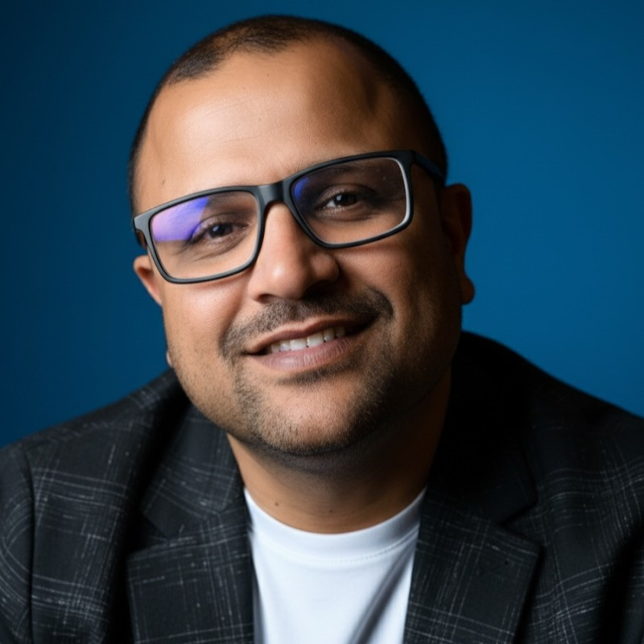

Most AI transformation work ends at the slide deck. Two decades of building production systems — first inside Google, now inside client engagements — is what I bring to make sure mine ends at the running system.
Ten years at Google, scaling operations across multi-system products. The interesting failures always happened between components, not inside them. That instinct — that the edge lives at the seams — is the foundation of everything Coworker Labs does. We build the orchestration layer other firms treat as an afterthought.
IIT for the engineering first principles. Google for distributed orchestration at production scale. ISB for the business architecture layer. Two decades of operating across those three layers is the credential I put behind every engagement.
The last four years: advisory and go-to-market work for enterprise AI — pilots, orchestrations, transformations. Watching what actually ships versus what stays in the deck. Coworker Labs is the practice built on those lessons.
Flip Picker is one concrete example of the build — an algorithmic trading platform I architect and operate end-to-end, running on my own capital against live markets. A real system solving a real problem, not a demo deck. It’s how I prove, to myself first, that the AI orchestration I bring to client work actually holds up when stakes are real.
Built on Opus. One operator, a stack of AI coworkers. That arrangement — human and AI operating as genuine peers on production work — is the discipline brought to clients.
Based in Pacific Time. Currently accepting two fractional engagements.
On the name Coworker Labs is not metaphorical. The firm operates with a small stack of AI coworkers — pair programmer, research assistant, code reviewer — on every engagement. We treat that as a feature of the service, not a secret. Clients get the output of a team; they pay for the accountability of one operator.